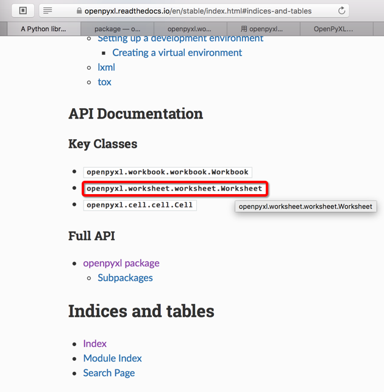
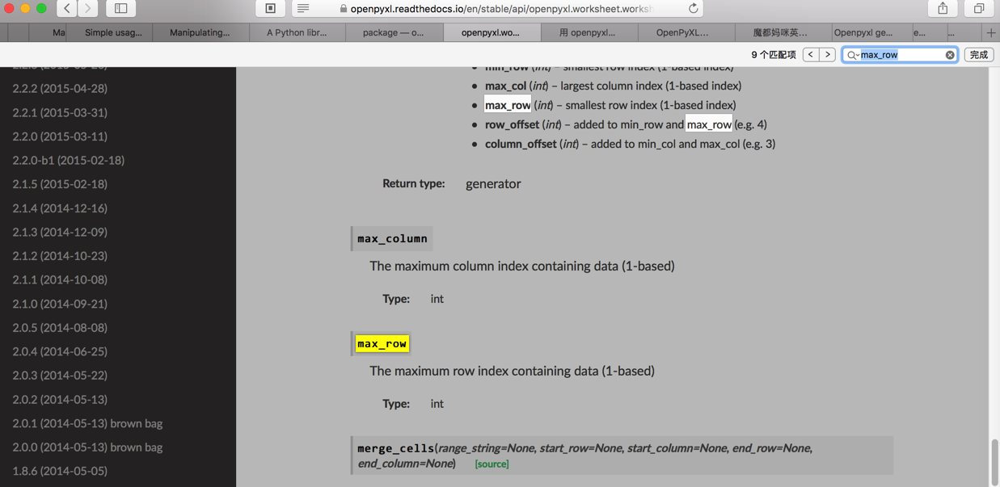

如何学习新知识
学习新知识的方法
遇到一个新知识，要先把几个几个核心要点问题搞清楚：
what：搞清楚一个东西是什么why和whenwhy：一个东西为何出现- 往往涉及到该东西出现的背景和缘由
when：一个东西何时出现- 从出现的时间范围，往往也有助于理解其前后因果关系
how：如何实现这个东西，具体是怎么做的，大致原理
把这几个问题都解释清楚了，也就对一个东西有了大致的了解了。
学习新知识的步骤
核心思路：找到最权威的官网的资料，去参考官网教程去学习
比如：
scrapyDjangoReactJS- 官网教程的众多好处：
- 权威，够准确
- 内容解释更加到位
- 内容最及时
- 尤其是React等发展比较快的技术，最新的文档往往最有价值
- 权威，够准确
- 官网教程的众多好处：
举例：获取openpyxl当前excel的sheet的最大的行row数
在用Python的openpyxl去处理excel文件：
【已解决】python解析excel文件并读取其中的sheet和row和column的值
期间，需要找到openpyxl中，如何获得当前excel的sheet的最大的行（row）数
根据经验，确信官网文档：
openpyxl - A Python library to read/write Excel 2010 xlsx/xlsm files — openpyxl 2.5.0 documentation
中是可以找到的
但是看了很多个具体的页面的example例子中：
Simple usage — openpyxl 2.5.0 documentation
Manipulating a workbook in memory — openpyxl 2.5.0 documentation
并没有找到。
思路：按照道理，这个最大的行数，应该属于当前的（excel的）sheet的，所以感觉应该属于sheet类中的
（背景知识：一般官网文档，除了turorial教程，example示例等，都还有API接口文档的）
所以就去找api文档：
openpyxl package — openpyxl 2.5.0 documentation
中搜sheet方面的类。只有一个：
openpyxl.comments.comment_sheet module
明显不是我要的。
然后继续利用google去搜：
Openpyxl get current sheet max row
而找到了：
中的，我们要的：
row_count = sheet.max_row
column_count = sheet.max_column
而反过来回到官网文档，突然才发现，原来官网文档首页：
openpyxl - A Python library to read/write Excel 2010 xlsx/xlsm files — openpyxl 2.5.0 documentation
是有对应的类：

openpyxl.worksheet.worksheet.Worksheet
进去 openpyxl.worksheet.worksheet module — openpyxl 2.5.0 documentation 后果然就可以搜到max_row的：

所以此处总结过程就是：
- 首先要求自己：充分利用官网文档和Google搜索，可以帮忙我们快速精准的找到要的东西
- 其次要求对方：官网文档首先要写的更清楚，准确，方便查找
- 然后要求自己：看官网文档要足够细心，才能看准，看清，找到自己要的东西
而所有这一切，要有一些背景知识和经验：
- 要知道很多好的库，往往文档也写的很好
- 所谓文档写得好，至少意味着：
- 文档和代码是同步的，不是滞后的
- 文档要有清晰的简明的示例，即example，tutorial等内容
- 用于给新手快速上手，了解如何使用
- 也有相关的API接口文档
- 当用户需要深入了解具体某个类有哪些功能、参数、属性、注意事项等，可以去查API文档
- 所谓文档写得好，至少意味着：
- 要知道作为一般的技术人员的你，针对尤其是成熟的第三方的软件、系统、库等等，所遇到的绝大多数问题，往往别人都遇到过，往往别人都上网去讨论过，往往都有热心人回答过，而你要做事情只是：
- 去充分利用google等去搜索到自己需要的内容
- 当然如何去选择搜索的关键词，也是很重要的
- 即使你不太会把当前问题提取出合适的关键词，往往google的动态匹配，给你合适的提示
- 和google比，其他搜索引擎，比如百度，搜狗，bing等，对于搜索出的帖子的质量（相关程度，帖子回答的质等），都没google好，所以有条件的，尽量用google
- 当然如何去选择搜索的关键词，也是很重要的
- 去充分利用google等去搜索到自己需要的内容